Texto y búsqueda
Tópicos Avanzados de Programación
I � unicode
Qué es un encoding? Qué es unicode?
No existe "un" estándar de "texto plano". Nunca veríamos caracteres rotos.
Caracteres rotos 🠖 "problema de encodings!"
...y qué es un encoding? 🠖 🤷
Mucha desinformación y mitos, incluso en tutoriales y videos!
El inicio
Nosotros sabemos de caracteres, las computadoras saben de bytes.
Hubo que definir cómo representar caracteres en bytes.
Alguien dijo: que la 'A' sea 01000001, la 'B' sea...
El problema
- Distintas personas/sistemas eligieron distintos bytes para los mismos caracteres!
- Distintas personas/sistemas eligieron distintos conjuntos de caracteres! (alfabetos, símbolos especiales, etc)
Nacieron los muchos Encodings: estándares de representación de caracteres en bytes.
Ej: ASCII encoding


Qué problemas tiene ASCII?
❌ Conjunto de caracteres muy limitado!
❌ Largo fijo de bytes: nunca vamos a poder agregar más caracteres.
✅ Solución: usar otros encodings mejores.
...pero cuál?
CP-1251, CP-1252, ISO-8859-1, GB-2312, Shift-JIS, UTF-8, UTF-16...?
Qué es Unicode?
Unicode es un encoding...
NO
Qué es Unicode?
Un estándar que define la lista de caracteres humanos: con id, nombre, dibujito, reglas de mayúscula/minúscula, y más data de cada uno.
NO ES UN ENCODING!
Ejemplos
Unicode NO dice cómo representar cada caracter en bytes, no es un encoding.
El id NO es eso! es solo un id en la lista de caracteres.
Pero ahora todos los encodings se definen en base a Unicode!
Redefinimos Encoding:
Algo que nos dice cómo representar en bytes cada caracter de Unicode.
Ej: con encoding ASCII el caracter U+0041 de Unicode (la letra 'A') se representa con los bytes 01000001.
Unicode ya tiene más de un millón de caracteres, encodings viejos cubren solo una pequeña parte (ej: ASCII no tiene π).
El mismo grupo que mantiene Unicode, creó encodings mucho mejores! UTF-8/16/32
Los encodings UTF cubren todo Unicode, por más que se vaya actualizando (no se van a acabar los números porque usan largo variable).

Encodings al programar
En lenguajes modernos un "texto" (string) es una cadena de caracteres unicode.
Pero al guardar a disco, base de datos, mandar por red, etc, tenemos que convertirlos a bytes.
Todas las operaciones de texto (largo, combinar, pasar a mayúscula, etc) deberían ser sobre strings, no sobre bytes.
"Encodeamos"/codificamos: 'A' 🠖 01000001
Tomamos caracteres unicodes (texto) y los convertimos a bytes.
Decodificamos: 01000001 🠖 'A'
Tomamos bytes y los convertimos a una secuencia de caracteres unicode (texto).
...salvo algunos lenguajes viejos/malos donde la división no es clara, generando muchos problemas de todo tipo (lenguajes que solo manejan bytes encodeados y no entienden de Unicode, lenguajes que solo soportan un encoding, etc).
Idealmente
- Leemos/recibimos bytes, los decodificamos usando el encoding que corresponda, y nos quedamos con texto (strings unicode).
- Trabajamos en variables con el texto (modificamos, combinamos, etc).
- Encodeamos a bytes al momento de guardarlos/enviarlos.
A veces sucede automáticamente:
- Los lenguajes saben decodificar/encodear automáticamente al leer o escribir archivos.
- Los ORMs saben decodificar/encodear automáticamente al leer o escribir contra la base de datos.
Qué encoding usamos?
Idealmente UTF-8 en todo lo que podamos.
- Archivos que leemos o escribimos a disco.
- Base de datos.
- HTML que entregamos en una response HTTP.
- Las requests y responses HTTP mismas.
- Archivos de código (son archivos de texto!).
Pero no siempre controlamos nosotros el encoding:
- Archivos que nos generan otros sistemas.
- Base de datos que no controlamos.
- Responses de APIs web de terceros.
Qué encoding usamos para leer sus datos? El mismo que los terceros usaron para encodear!
Qué encoding usamos para mandarles datos? El que los terceros esperan!

Demo
Encodeemos, decodifiquemos, adivinemos, etc.
Problemas comunes
❌ Problema: no sabemos qué encoding tiene datos de un tercero.
✅ Solución: que nos digan! (docs, escribirles, etc).
- Che, en qué encoding está el archivo?
- Está en unicode
- O...K...
✅ También hay libs para adivinar, no 100% precisas.
❌ Problema: nos dijeron que los datos vienen en un encoding, pero usando ese encoding falla o vemos caracteres raros.
✅ Solución: pedir que lo arreglen, o intentar adivinar cuál es el encoding que realmente están usando y usar ese en vez.
❌ Problema: al leer/escribir de la base de datos o de un archivo, vemos caracteres extraños.
✅ Solución: seguro estamos leyendo o escribiendo con el encoding incorrecto (ej: la base de datos habla en CP-1252 y nosotros decodificamos los resultados de la query usando UTF-8). Usar el encoding configurado en la DB.
❌ Problema: al acceder a nuestra web se ven caracteres extraños.
✅ Solución: o no estamos especificando el encoding del html, o sí pero luego lo generamos con otro encoding. Usar el encoding correcto y especificarlo en el html:
<!DOCTYPE html>
<html lang="en">
<head>
<meta charset="utf-8"/>
...
Búsqueda de texto
Búsqueda interna
Cómo implementamos un motor de búsqueda en nuestra app?
Búsqueda externa
Cómo aparecemos en los resultados de Google?
Búsqueda de texto interna: por qué?
Los usuarios esperan poder buscar.
Es la forma más intuitiva de acceder a contenido.
Cómo lo resolverían?
Ej: tenemos una base de datos de productos para runners, y los usuarios quieren poder buscar.
Qué hacemos?
Buscando con SQL
SELECT * FROM productos
WHERE descripcion ...?
SELECT * FROM productos
WHERE descripcion LIKE '%zapatillas%'
SELECT * FROM productos
WHERE descripcion LIKE '%zapatillas para correr maratón%'
SELECT * FROM productos
WHERE descripcion LIKE '%zapatillas%'
AND descripcion LIKE '%para%'
AND descripcion LIKE '%correr%'
AND descripcion LIKE '%maratón%'
SELECT * FROM productos
WHERE descripcion LIKE '%zapatillas%'
OR descripcion LIKE '%para%'
OR descripcion LIKE '%correr%'
OR descripcion LIKE '%maratón%'
...y cómo ordenamos los resultados para que queden primeros los más relevantes?
...qué tan rápidas van a ser esas queries? Ayudaría si usamos índices?
❌ SQL no está pensado para búsquedas de texto completo, es una muy mala herramienta para ello.
❌ Problemas de calidad de resultados:
- Frase completa? Demasiado estricto.
- Palabras separadas? Con ANDs demasiado estricto, ORs demasiado abierto.
- Palabras similares no son consideradas.
- No podemos rankear por relevancia.
❌ Problemas de performance:
- Las queries con "LIKE %algo%" generan table scans! Los índices por campo no sirven.
Y entonces? Qué hacemos? Los datos están en la base de datos y hay que buscar...
Usamos un motor de búsqueda de texto!
Motores de búsqueda de texto completo
Leamos todas las descripciones y construyamos un índice de búsqueda de texto:
| Palabra | Documentos que la contienen |
|---|---|
| zapatillas | 1, 2, 4 |
| correr | 1, 2, 3, 4, 5 |
| maratón | 2, 3 |
Y lo hacemos ignorando stopwords!: "para", "la", "de", "un"...
La columna "Palabra" se puede indexar!
(no filtramos más por "LIKE", sino por "=").
Ir a una palabra es super rápido.
Cómo lo usamos?
Cuando el usuario busque "zapatillas para correr":
- Separamos palabras y descartamos stopwords: "zapatillas", "correr".
- Buscamos cada palabra en el índice.
- Obtenemos los documentos que las contienen.
- Los rankeamos según cuántas palabras tenían.
Pero todavía tiene problemas
Qué pasa si busco "zapatillas" y hay un producto que dice "zapatilla"?
Da lo mismo que contenga "zapatillas" vs que contenga "correr"? (era un sitio de runners)
Stemming
En vez de indexar palabras, indexamos raíces de palabras.
| Raíz | Documentos que la contienen |
|---|---|
| zapatill | 1, 2, 4 |
| corr | 1, 2, 3, 4, 5 |
| maratón | 2, 3 |
Ganamos cobertura, perdemos un poco de precisión.
Term frequency
No da lo mismo que un resultado contenta una palabra que es rara, vs que contenga una palabra que es muy común en nuestros datos.
De cada palabra vamos a guardar:
- Cuánto aparece en cada documento.
- Qué tan rara es en nuestro conjunto entero de documentos (0 = nada rara, super común).
| Raíz | Documentos que la contienen |
|---|---|
| zapatill (0.5) | 1 (0.2), 2 (0.9), 4 (0.3) |
| corr (0.01) | 1 (0.8), 2 (0.9), 3 (0.5), 4 (0.3), 5 (0.7) |
| maratón (0.9) | 2 (0.9), 3 (0.1) |
Al rankear resultados, podemos "pesarlos" en base a esos dos números.
Combinando todo
Cuando el usuario busque "zapatillas para correr":
- Separamos palabras, descartamos stopwords y obtenemos raíces: "zapatill", "corr".
- Buscamos cada raíz en el índice.
- Obtenemos los documentos que las contienen, con sus frecuencias y rarezas.
- Los rankeamos dándoles peso por cantidad de raíces que contienen, y sus frecuencias y rarezas.
Hay que mantener el índice
Si la base de datos cambia, hay que actualizar el índice.
En tiempo real? cada X tiempo?
Depende!
Hay que saber stopwords y raíces de palabras
Esto depende de cada lenguaje.
...entonces también hay que saber el lenguaje del contenido.
Hay motores mejores y peores en este sentido.
Es mejor que SQL?
Calidad?
✅ Sí! Obtenemos resultados relevantes y bien rankeados.
Performance?
✅ Sí! Buscar la raíz en el índice es super rápido.
Motores conocidos
- ElasticSearch, Apache Lucene, OpenSearch, Apache Solr: se instalan como servidor, y te dan API para actualizar el índice y consultarlo.
- PostgreSQL, MySQL, MS SQL, Oracle, MongoDB: tienen motores propios metidos dentro de la DB misma, con sintaxis custom para usarlos (no LIKE!).